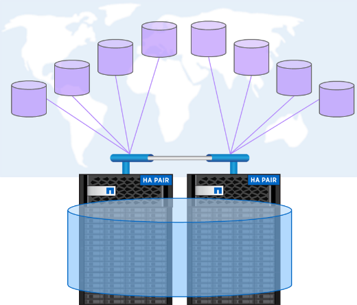
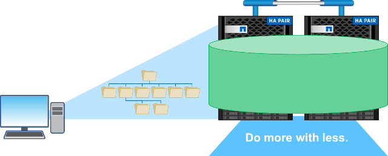
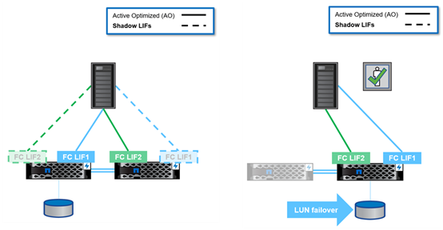

Data Protocols
Contributors
 Download PDF of this page
Download PDF of this page
Data protocols refer to the methods in which clients and end users interact with the NetApp ONTAP storage system for data access. NetApp ONTAP provides multiple officially supported interfaces for data access in the same storage platform, including the following:
-
NAS
-
SAN
-
S3
ONTAP 9.8 delivers a slew of enhancements to ONTAP data protocols.
NAS Protocol Enhancements
Network Attached Storage (NAS) protocols refer to file-based transfer methods such as NFS and SMB/CIFS. The following enhancements were added to ONTAP 9.8 for NAS protocol support, as well as features that apply specifically to NAS, such as NetApp FlexGroup and FlexCache volumes.
NFS Enhancements
ONTAP 9.8 offers the following NFS enhancements:
-
NFSv4.2. Offers basic NFSv4.2 protocol support and does not include NFSv4.2 features such as labeling. NFSv4.2 is enabled when NFSv4.1 is enabled.
-
Qtree Quality of Service (QoS). Provides a way for storage administrators to apply QoS maximums and minimums to qtrees in ONTAP. This is currently only available with REST APIs and the command line, does not include adaptive QoS support, and is NFS only.
SMB/CIFS Enhancements
ONTAP 9.8 offers the following SMB/CIFS enhancements:
-
SMB3-encrypted DC connections. Encryption over the wire for SMB DC connections.
-
Map SID to UID on Set Owner (-map- sid-to- uid-on-set-owner). This option controls whether ONTAP maps the Windows SID to a UNIX UID when setting ownership on files and folders. The option was added to improve the data migration experience for customers that experienced increased load on their Active Directory Servers. The default is
true. (Fix for bug 1153207.) -
Set Modebits when NFSv4_acl are inherited (-is-inherit-modebits-with-nfsv4acl-enabled). Provides support for multiprotocol NAS interaction when SMB files are created in directories where NFSv4 ACLs have removed the default
OWNER@,GROUP@, andEVERYONE@ACLs, or those ACLs don’t have inherit flags set. Default isfalse. (Fix for bug 820848.)
FlexCache Volume Enhancements
NetApp FlexCache volumes are sparse, virtual caches comprised of NetApp FlexGroup volumes. These caches point back to an origin volume and populate data into the cache as it is requested from clients to provide fast, localized access anywhere you run ONTAP―whether in the cloud, at the edge, or in the datacenter―to provide a truly global namespace.

For more information about FlexCache volumes, see TR-4743: FlexCache in ONTAP.
ONTAP 9.8 offers the following FlexCache volume enhancements:
-
SMB/CIFS support. NetApp FlexCache now supports cache access to NFSv3 and SMB clients, as well as multiprotocol NAS data access. FlexCache can be used for multi-site distributed localized file locking for workloads that are read-heavy.
-
Increased FlexCache fan-out ratio. ONTAP 9.8 provides a 100:1 fan-out ratio. Previously, the ratio was 10:1.
-
FlexCache volumes with a SnapMirror secondary origin. FlexCache volumes can now be attached to SnapMirror secondary volumes, which provides a way to offload read operations from the primary storage systems, as well as offering a more geographically localized origin volume.
-
Block-level cache invalidation. Rather than invalidating entire files when evicting changed data from the cache, now only the blocks that have changed are evicted. This saves capacity and WAN traffic load.
-
Pre-populating caches. If you have a directory in a volume that you know will be accessed frequently, you can now pre-populate the cache with the contents of that directory to eliminate the latency from initial client access.
FlexGroup Volume Enhancements
FlexGroup volumes are the NetApp ONTAP scale-out NAS solution, providing up to 20PB and 400 billion files in a single namespace, while offering automatically load-balanced parallel processing of high ingest workloads for a blend of capacity, performance, and simplicity.

For more information about FlexGroup volumes, see TR-4571: NetApp FlexGroup Volumes Best Practices.
ONTAP 9.8 offers the following FlexGroup volume enhancements:
-
1,023 Snapshot support. NetApp FlexGroup volumes now can have up to 1,023 Snapshot copies per volume. With additional Snapshot copies, FlexGroup volumes can become more viable as archival destinations, can keep a larger number of frequent snapshots, and can now support FlexVol conversions that have Snapshot copy IDs greater than 255.
-
NDMP enhancements. NDMP support for FlexGroup volumes was added in ONTAP 9.7 but was missing the following functionality options:
-
ONTAP 9.8 adds support for NDMP
-
EXCLUDE
-
Restartable Backup Extensions (RBE)
-
MULTI_SUBTREE_NAMES
-
Performance enhancements
For more information on FlexGroup volumes and NDMP, see TR-4678: Data Protection and Backup - FlexGroup Volumes.
-
-
FlexGroup convert support for 7MTT volumes. Prior to ONTAP 9.8, you could not convert a FlexVol that had been transitioned from 7-Mode to a FlexGroup volume. ONTAP 9.8 lifts that restriction.
-
Proactive resizing. Proactive resizing is a capacity management feature that maintains a free space buffer in FlexGroup member volumes to encourage consistent performance and capacity distribution.
-
File cloning. You can now clone files in a FlexGroup volume using VMware vSphere through VAAI copy offload support. File cloning with REST APIs or the CLI is not currently supported, however.
-
VMware datastore support. ONTAP 9.8 now has official support for FlexGroup volumes as scalable VMware datastores. This means the following:
-
Validated performance and placement
-
Interop qualification
-
Virtual Storage Console support
-
NetApp SnapCenter backup support
-
Async Delete
Async delete enables storage administrators to bypass the latency of the network by deleting directories from the CLI.
If you have ever tried to delete a directory with many files in it over NFS or SMB, you know how painful that can be. Each operation must travel over the network via the NAS protocol that you are using, and then ONTAP must process those requests and respond. Depending on the network bandwidth available, client specs, or storage system, that process can take a long time. Async delete saves significant time and allows clients to get back to work quicker.
For more information on async delete, see TR-4751: NetApp FlexGroup Volumes Best Practices.
SAN Enhancements
Storage Area Network (SAN) protocols refer to block-based data transfer methods such as FCP, iSCSI, and NVMe over Fibre Channel. The following enhancements were added to ONTAP 9.8 for SAN protocol support.
All-SAN Array (ASA)
ONTAP 9.7 introduced a new dedicated SAN platform called ASA, with the goal of simplifying Tier-1 SAN deployments while drastically reducing the failover times in SAN environments by offering an active/active approach to SAN connectivity.
You can find out more about the ASA at All-SAN Array documentation resources.
ONTAP 9.8 brings some enhancements to the ASA, including the following:
-
Larger LUN and FlexVol volume sizes. LUNs on the ASA can now be provisioned at 128TB; FlexVol volumes can be 300TB.
-
MetroCluster over IP support. ASA can now be used for site failovers over IP networks.
-
SnapMirror Business Continuity (SM-BC) support. ASA can be used with SnapMirror Business Continuity. xref
-
Host ecosystem expansion. HP-UX, Solaris, and AIX support. See the Interoperability Matrix for details.
-
Support for the A800 and A250 platforms.
-
Simplified Provisioning in System Manager.
Persistent Ports
ASA adds an enhancement called Persistent Ports to improve failover times. Persistent ports in ONTAP offer much more resiliency and continuous data access for SAN hosts connecting to an ASA. Each node on the ASA maintains shadow fiber channel LIFs. This functionality is key to how ONTAP 9.8 reduces SAN failover time even more for the ASA. These LIFs maintain the same IDs of the partner LIFs, but they remain in standby mode. If there is a failover and an FC LIF must migrate to the partner node, then, rather than changing the IDs (which can increase failover times while the host negotiates that change), the shadow LIF becomes the new path. The host continues I/O on the same path, on the same ID, without a link-down notification and without any additional configuration required.
The following figure provides a failover example for persistent ports.

NVMe/FC
NVMe is a new SAN protocol that helps improve latency and performance with block workloads over traditional FCP and iSCSI.
This blog covers it nicely: When You’re Implementing NVMe Over Fabrics, the Fabric Really Matters.
NetApp introduced support for NVMe over Fibre Channel in ONTAP 9.4 and has been adding feature enhancements in each release. ONTAP 9.8 adds the following:
-
NVMe/FC on the same SVM with FCP and iSCSI. Now, you can use NVMe/FC on the same SVMs as your other SAN protocols, which simplifies management of your SAN environments.
-
Gen 7 SAN switch fabric support. This feature adds support for the newer Gen-7 SAN switches.
S3 Enhancements
Object storage with the S3 protocol is the newest addition to the ONTAP protocol family. Added as a public preview in ONTAP 9.7, S3 is now a fully supported protocol in ONTAP 9.8.
Support for S3 includes the following:
-
Basic PUT/GET object access (does not include access to both S3 and NAS from the same bucket)
-
No object tagging or ILM support; for feature-rich, globally dispersed S3, use NetApp StorageGRID.
-
-
TLS 1.2 encryption
-
Multi-part uploads
-
Adjustable ports
-
Multiple buckets per volume
-
Bucket access policies
-
S3 as a NetApp FabricPool targetFor more information, see the following resources:
-
Tech ONTAP Podcast: Episode 268 - NetApp FabricPool and S3 in ONTAP 9.8
 Edit on GitHub
Edit on GitHub